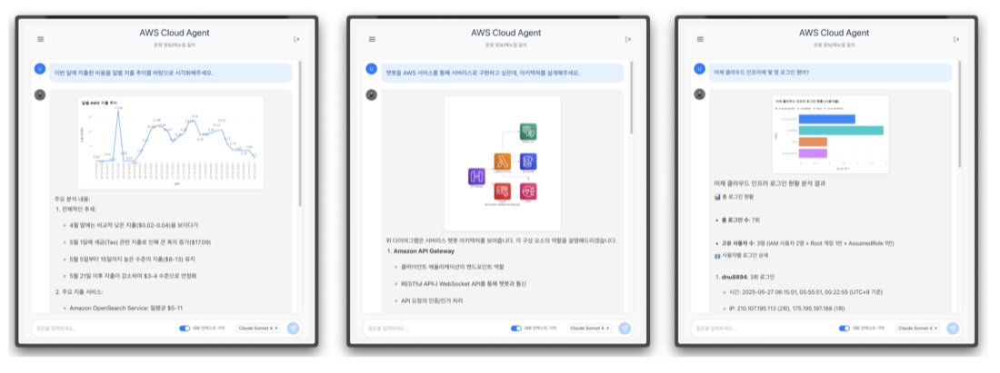
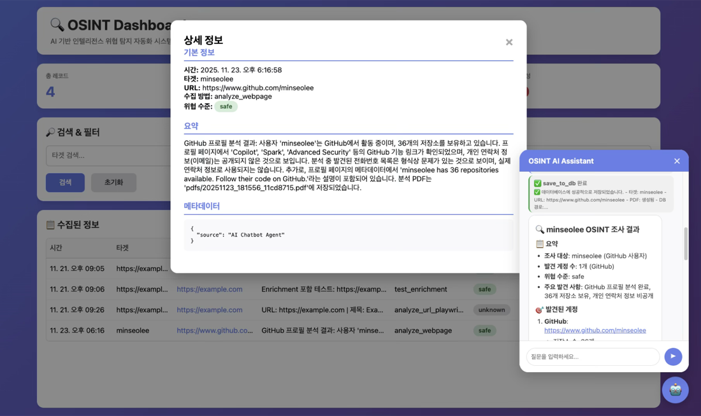
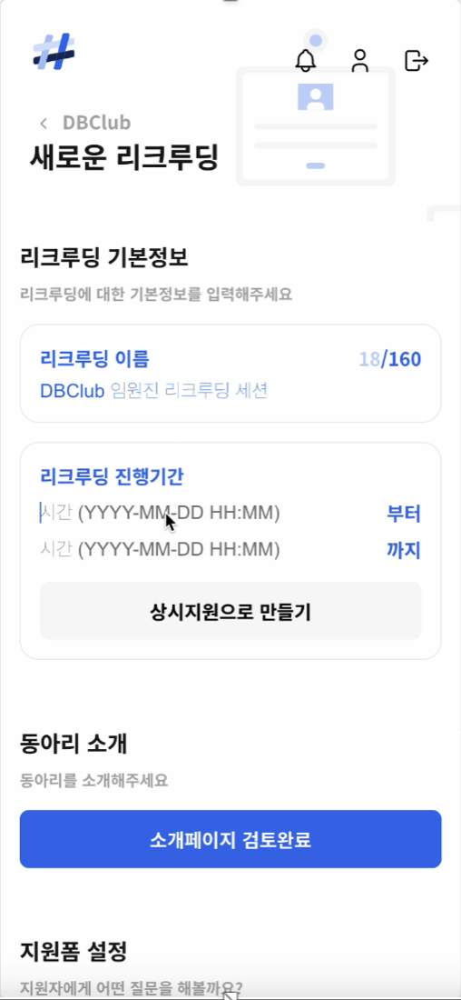

주식회사 인투액션 — IntoAction
2026.02 – 2026.04- LG CNS에서 PMO ARIS 담당으로 ERP PI 프로젝트를 진행
- LG Entrue에서 AX PI 방법론을 기획하고, 이를 ARIS 솔루션과 웹 애플리케이션 프로토타입으로 제공
- LG Entrue 컨설턴트 40명 대상 2회 교육 진행
안녕하세요, 보안에 자신 있는 풀스택 개발자 황신철입니다. 아주대학교 사이버보안학과에서 시스템 해킹부터 웹 개발까지 폭넓게 배우며, "공격을 아는 사람이 더 안전한 것을 만든다"는 관점으로 개발합니다.
LG CNS·LG Entrue의 실제 컨설팅 프로젝트에서 ARIS 솔루션과 웹 애플리케이션을 개발했고, CTF·Pwnable 워게임과 악성코드 분석 스터디로 보안 역량을 꾸준히 쌓아왔습니다. 새로운 기술을 빠르게 학습해 실제 문제에 적용하는 것을 즐깁니다.
서울, 대한민국
English · OPIc IH
사이버보안학과
러닝 · 카페 탐방

AWS 기반 클라우드 운영 자동화를 위한 서버리스 에이전트 플랫폼. Streamable-HTTP + Serverless MCP를 활용해 AIOps Agent를 구현했습니다. 아주대 2025-1 캡스톤디자인 장려상 수상, SW중심대학 연합 SW 페스티벌 시연.
[더미] 클라우드 운영팀이 늘어나는 로그·지표를 수작업으로 분석하며 장애 대응이 지연되는 상황이었습니다.
[더미] 운영 데이터를 자연어로 질의·분석하는 서버리스 AIOps 에이전트를 설계·구현하는 것이 목표였습니다.
[더미] Streamable-HTTP + Serverless로 MCP 서버를 구성하고, API Gateway·Lambda·Bedrock으로 LLM 에이전트가 CloudWatch·Athena를 조회하도록 개발했습니다.
[더미] 운영 질의 응답 시간을 약 ◯◯% 단축(예시), 아주대 2025-1 캡스톤디자인 장려상 수상.

차세대 AX PI 방법론을 기획하고 ARIS 솔루션을 커스터마이징. ARIS JavaScript 보고서 기능을 개발하고, 웹 애플리케이션을 ARIS REST API와 연동. Facilitator로 교육에 참여해 실시간 대응했으며 LG화학에 채택되었습니다.
LG CNS의 업무 프로세스에 AX를 도입하기 위한 방법론을 LG Entrue와 논의하고, 이를 웹 애플리케이션으로 구현하여 컨설턴트에게 프로토타입을 실습 자료로서 제공하였습니다.
LG CNS를 비롯한 대다수의 대기업은 업무에서 사용되는 프로세스에 AX를 도입하기 위해 투자를 아끼지 않는 상황입니다. 이를 위해 기존의 프로세스를 어떻게 AX로 전환할지, 그리고 AI를 통해 어떻게 프로세스를 그려나갈지 정의하는 방법론이 절실하였습니다. 저는 인투액션 소속으로서, LG Entrue와 AX PI를 위한 As-Is와 To-Be 방법론을 함께 설계했습니다.
저는 AX PI 방법론을 기반으로 프로세스를 AX로 전환하는 웹 애플리케이션 개발을 담당했습니다. 또한, 교육 중 컨설턴트의 질의응답을 담당하고, 버그를 실시간으로 해결하는 Facilitator 역할을 맡았습니다. 3월 27일날 프로젝트에 투입되었고, 1차 목표는 4월 7일 전까지 ARIS 솔루션을 커스터마이징하여 1차 교육에 제공하는 것이었고, 2차 목표는 단점을 보완하기 위해 웹 애플리케이션을 4월 24일까지 자체 제작하여 2차 교육에 제공하는 것이었습니다.
1차 목표를 완수하기 위해, 저는 ARIS 솔루션의 보고서(백엔드) 기능을 Javascript 언어로 개발했습니다. 방법론의 진행 단계(추진계획서 생성 → VDT/프로세스 매핑 → 요구수준 분석 → 우선순위 평가 → To-Be 설계)를 단계별로 그대로 따라갈 수 있게 설계했습니다. 후술할 이유로 웹 애플리케이션으로 리펙토링하기 위해, 아래의 ARIS Javascript 보고서 기능은 더 이상 사용하지 않지만, UI와 로직을 설명하기 위해 첨부했습니다.
ObjOcc.getConnectedObjOccs()로 인접 개체를 수집하고, model.CxnOccList()으로 연결의 타입과 방향을 구분하며 순회하는 구조로 설계했습니다.3점: 전사/핵심 밸류체인 영향)으로 선택하게 해 평가자 간 편차를 줄였습니다.[더미] LG화학·LG생활건강에서 긍정 평가, LG화학에 채택되어 계열사 확대 진행 중입니다.

(주)쿤텍과 협업하여 진행한 2025-2 파란학기 WE-Meet 프로젝트. AI를 활용해 사이버 위협 인텔리전스를 수집·프로파일링하는 시스템을 개발했습니다.
[더미] 위협 인텔리전스 수집이 수동·분산되어 프로파일링에 많은 시간이 걸리는 상황이었습니다.
[더미] OSINT 수집·분석·리포트를 자동화하는 시스템을 구축하는 것이 목표였습니다.
[더미] 웹페이지 분석으로 계정·연락처 노출을 프로파일링하고, AI 어시스턴트로 조사·위험도 판정·PDF/DB 저장을 구현했습니다.
[더미] 조사 리드타임을 약 ◯◯% 단축(예시)했고, (주)쿤텍 협업 WE-Meet 프로젝트로 진행했습니다.
LG CNS의 Process Architecture를 이해하고, ERP PI 시스템을 ARIS 솔루션 기반으로 구축 및 운영 지원했습니다.
[더미] 대규모 ERP 프로세스가 표준화되지 않아 프로세스 혁신(PI)이 필요한 상황이었습니다.
[더미] Process Architecture 이해를 바탕으로 ERP PI 시스템을 ARIS 기반으로 구축·운영 지원하는 것이 과제였습니다.
[더미] 프로세스 모델링·표준화 작업을 수행하고, ARIS 기반 프로세스 아키텍처 운영을 지원했습니다.
[더미] 프로세스 가시성과 표준화가 개선되었습니다. (업무상 상세는 생략)

2024-2 데이터베이스 과목 팀 프로젝트로 개발한 동아리 관리 서비스. 데이터베이스 과목 우수 프로젝트 예시에 수록되었습니다.
[더미] 동아리 리크루팅·운영이 여러 채널에 흩어져 관리가 비효율적인 상황이었습니다.
[더미] 모집·지원폼·소개를 하나로 통합 관리하는 서비스를 개발하는 것이 목표였습니다.
[더미] 웹·모바일 UI와 관계형 데이터베이스를 설계하고, 리크루딩·지원폼·상시지원 기능을 구현했습니다.
[더미] 2024-2 데이터베이스 과목에서 우수 프로젝트 예시로 수록되었습니다.
초세대 팀에서 Pwnable 문제 담당. CAN 로그로 펌웨어를 복원한 뒤 dprintf·warnx의 format string 취약점으로 libc 주소를 leak, warnx GOT를 system으로 덮어써 /bin/sh 셸을 획득하고 플래그를 탈취했습니다.
Dreamhack 시스템 해킹 트랙을 전부 수료. Whois 내부 스터디에서 다양한 pwnable 문제를 해결하고 익스플로잇 기법을 공유했습니다.
서울여대 정보보안 학회 SWING과 협업. Linux 가상환경에서 LokiBot을 분석하고 GetPrivateProfileStringA 등 악성 API 호출로 자격증명을 탈취하는 방식을 규명했습니다.
AWS AI&Data FDE(Madhur Prashant)의 MCP 서버를 테스트하던 중 버그를 발견해 직접 수정했습니다.
관광 추천 서비스의 FastAPI 백엔드를 구축. PostgreSQL 데이터 모델과 API 계층을 설계하고 JWT 인증·bcrypt 해싱으로 계정 보안을 강화했습니다.
팀장으로서 데이터 전처리부터 모델링·평가까지 주도. 바이올린 플롯·상관 히트맵 EDA로 가설을 검증하고 다중공선성을 완화했습니다.
AI를 활용한 민원 서비스 혁신 시나리오와 개발 방법을 제안한 공모전에 참가했습니다. (2026.02 – 2026.03)
팀 "김이황"으로 참가, 아티스트-팬 소통을 통합한 음악 팬 플랫폼 '헤르츠'로 장려상(교육과정 부문) 수상.
사이버보안학과 · GPA 3.64 / 4.5 (전공 3.62)